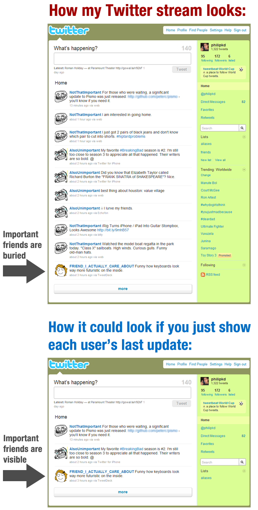
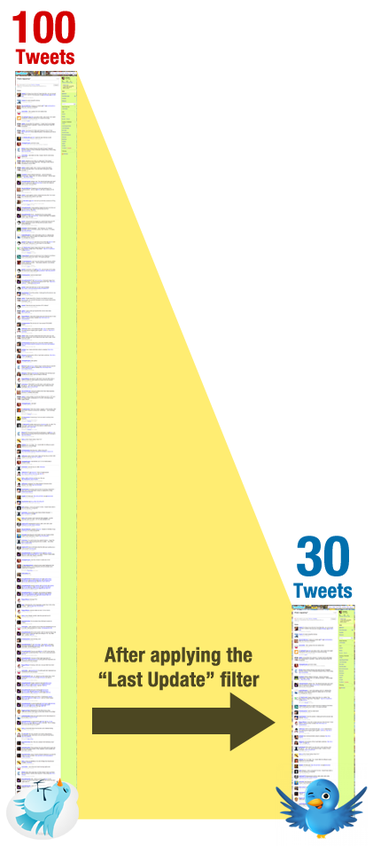
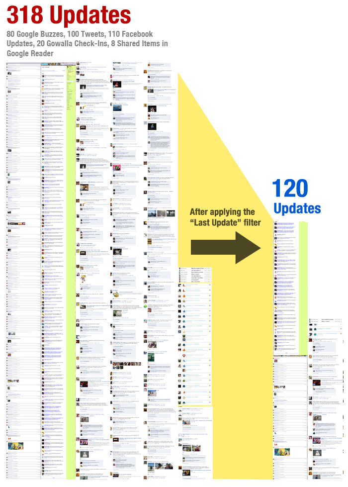

How I would re-design Facebook, Twitter, Brizzly, etc.
by phil on Saturday Jun 19, 2010 11:47 PM
The sad thing about Twitter and other social update networks these days is that they become less useful as they keep growing. Most of my friends and I can remember a short-lived golden age, when it was just a few of us on these networks, and everybody updated, and everybody read everybody's updates. Now, there's too many updates from people who are unimportant (but not unimportant enough to unfollow). And to make matters worse, everybody's scattered over a slew of networks, and it's hard to keep up with all of them.
And so I would like to propose a design change to the way that feeds are presented. What you do is only show the most recent update from a user:

The above example is an exaggeration, but I applied it to a snapshot of my Tweets and got these results:

Or even better, what if a site could combine all my social feeds, and make sure that I only see the most recent update from a person across all their networks. So if Lauren Ipsum updates her Facebook, but then checks-in on Foursquare or Gowalla, I should only see her check-in.
I applied this filter to all my networks and got this result:

So you take a user's activity and collapse it into one item. You could also include an expand button, to show their previous activities that you might have missed.
This design turns a stream of updates into more of a dashboard. I was inspired by the way that Gowalla is designed, where I can, at-a-glance see where everybody has checked-in.
While I think Facebook and Twitter are too large to make such a radical re-design of their user flow, I think an upstart 3rd-party client like Brizzly could fill this space. If someone came up with a site that organized my networks like this, I would sign-up immediately and tell all my friends.
Response to some common questions:
What about lists?
I was initially excited about lists when they came out, but I have since stopped using them. You still have the loud-friend problem, and it doesn't give you that simple bird's eye-view. I go to these networks so I can, at a glance, see what my friends have been up to, with one or two clicks. Also, I have trouble managing lists, because as I add new friends, I forget whether or not they're on the "good" list. And so I have to re-check, often going onto twitter.com (which I hate), since many 3rd-party clients do not support the Twitter lists API yet (or if they do, it's half-assed). Overall, I just don't find them convenient, and I don't know of too many people who derive much value from them.
Why don't you just unfollow these people?
That's not how social networks work in the real world. You have people on a spectrum of being very important to very unimportant that you follow. And I want to see the important people without having to unfollow the only so-so important people. Plus, the act of unfollowing requires work. It's like asking people to throw out all the items in their house that they don't really need. It's impossible, and I believe that for most social network users, their friends lists are effectively monotonically increasing, until it gets too large that they hate the network, and then they just abandon it completely and start over somewhere else.
How would a "show more" feature work?
I was introduced on Y Combinator to FriendBinder which has an attempt at grouping enabled. The numbers with the arrows indicate how many "more" updates that person has:

Wouldn't a "show more" functionality get unwieldy?
I didn't explore the details too much about the "show more" feature. Would you list a count of the "unread items" from friends? Or would you need a slider that says "Show updates from the last 48 hours?" Then, would you need to couple this with some algorithm that bubbled up to the top the friends that you clicked "show more" on frequently? I'm not sure about the answers to all these questions, so I'll leave up to developers to figure it out.
What do you mean Phil? Are you trying to say I tweet too much??
I'm naturally inclined to update more often, but because I know about the loud-friend problem, I self-censor myself all-too-often. If I knew people had a "Last Update" filter, then I wouldn't feel as guilty.
Comments
Roger said on June 20, 2010 1:17 AM:
You put a lot of time into this post!
Enjoy your weekend.
Sudhir said on June 20, 2010 3:25 AM:
Great concept. Really wish someone would make this happen.
Tom said on June 20, 2010 3:26 AM:
Hmmm, not quite sure if this realy helps. Just look at your first and your last picture, they are nearly the same. Even after collapsing all your friends you end up with 120 of them. I think it's an intrinsic (not quite sure if spelling is right ;)) problem when using social networking that you can only get rid of by having less friends (no option). Maybe a relevance filter would be the right hint.
Another thing you pointed out could also help. There are some friends on twitter that write things that i don't want to read all the time. But there's no option to blind them out unless i completely unfollow them (which i don't want to do).
Nice idea, though. Thanx for sharing it.
Thomas Martin said on June 20, 2010 3:27 AM:
I most definitely would use a service like this, and have more than once thought about creating a third party application to do such a thing.
HCL said on June 20, 2010 3:33 AM:
"So if Lauren Ipsum updates her Facebook, but then checks-in on Foursquare"
That in fact is a problem. I might not be interested in the Foursquare-check-in information (I myself rarely do) but I do want to see the facebook update!
I would like to have something like in FB where you can "hide" certain applications, so I dont see anybodys tweets created by Foursquare.
… just my 5ct :)
nice, but said on June 20, 2010 3:37 AM:
Great post, great idea, let down only by the grammar in the first image
'How my twitter stream looks like'
should be
'how my twitter stream looks'
OR
'what my twitter stream looks like'
Anyway, great idea, hope someone applies this.
vicky said on June 20, 2010 4:18 AM:
there is already a way to do this using lists for Twitter.
try Listorious, either you can search for lists of people depending on your interests, or else sign up and make your own lists to follow
http://listorious.com/
matthew said on June 20, 2010 4:19 AM:
Why not use a more robust twitter client like HootSuit or TweetDeck. Both are designed to organize your feed better. Or start using Lists?
I dont think the design elements you'd like to see about are inherent problems within in the Twitter service design and are pretty easily done in an App or AIR tool that used the Twitter APIs.
This looks more like a new opportunity for a new kind of Twitter app than a design flaw. There are a lot of different kinds of twitter users (some of us keep very small networks and closed loops; some of us want to follow a large number of people; some use Twitter as a high-volume broadcast tool)
The genius of Twitter to me is that the service they offer will work for all those use cases and that the trick is designing an application on top of their API that customizes the flow of data into the right format.
Love the work you did. Now find a developer to build it!
Tim said on June 20, 2010 4:24 AM:
Like the idea of only the freshest tweets. There is still the use of lists to constrain the flow of information however. Equally we are in the realms of Dunbar here - are we fully connected to anymore than 150 folk in reality. I still try to live by Annabel Bentley 's approach when she said that she uses Twitter like a radio -turning it on and off. Much the same I wod suspect for other web based utilities
Tim said on June 20, 2010 4:24 AM:
Like the idea of only the freshest tweets. There is still the use of lists to constrain the flow of information however. Equally we are in the realms of Dunbar here - are we fully connected to anymore than 150 folk in reality. I still try to live by Annabel Bentley 's approach when she said that she uses Twitter like a radio -turning it on and off. Much the same I wod suspect for other web based utilities
anonymous said on June 20, 2010 6:00 AM:
Do you have 500 friends and contacts who have something important to say? Just don't follow so many people.
Ross Hill said on June 20, 2010 6:13 AM:
Good news - it does already exist! Go and download the Reportage iPhone app and it will make you navigate by individual. It is not 100% what you propose about but it is at least 90%.
I would like to see this idea developed further. It would be nice to see what other things you could apply through this line of thinking.
Rian said on June 20, 2010 6:15 AM:
Nice post. I think the solution you came up with speaks to the need for having filters on Twitter. However, I don’t think “freshest tweet” is the right filter. The problem is not that I don’t want to see older tweets by someone. The problem is that I don’t want to see tweets I’m not interested in.
For example, I might be interested in the article links someone posts, but I’m not interested in the fact that they just checked in at a restaurant 5,000 miles from where I live, or the details of their child’s volleyball game.
What I need is the ability to be selective about the tweets I see from a specific user. I need to ability to filter out tweets that include the terms “4sq”, or “gowal”, or “volleyball.” And I need the ability to set this at a global level or at a specific user level.
Yosbel Buscaron said on June 20, 2010 8:38 AM:
Awesome!
http://www.buscaron.com/
Davey IJzermans said on June 20, 2010 9:01 AM:
Maybe this could become a reality by means of a userscript.
Eric said on June 20, 2010 9:29 AM:
My current solution is to ignore / stop following people who post too much. If your design were implemented I could continue following these people and not have them flooding my update feed. Thank you!!! I hope to use this design somewhere somehow very soon!
Ruth said on June 20, 2010 9:41 AM:
This is why Twitter gave us lists (or rather, why clients gave us lists and then Twitter picked up on the idea). If you can't unfriend the people you don't care about, just list the people you do. I have a Tweetdeck list that's titled "People I Care About."
Tweetdeck also lets you hide certain kinds of posts--i.e. Foursquare--with its global features.
I think you're trying to build a solution for a problem that doesn't exist unless you use the basic, original Twitter web instead of using a client or even using the features that Twitter web managed to come up with after clients did them first. It's good news for you, I suggest you start creating lists and/or use a desktop client! Or just unfollow. Problem solved.
(Not Facebook, but Facebook is FUBAR)
winternett said on June 20, 2010 9:54 AM:
Facebook/Twitter should have a simple "minimize" post function that makes the updates from users you normally pay less attention to [in a smaller font] that can be displayed [in smaller font but still among] the posts you read most. It could be a selector option right next to each post next to your time-line with levels "1-3" for each poster which corresponds to Larger font sizes to Smaller font sizes for posts in a time-line view that gets saved for every account in a table that is used to filter each individual user's time-line. Might require more resources computing wise, but at least that way you could still see everyone's posts. Long live JQuery!
Slim Amamou said on June 20, 2010 10:50 AM:
Implemented! :) http://twitter.alixsys.com
It's a Twitter client optimised for older wap phones and per kb mobile internet plans. Check it. It's interesting UXwise.
Karl Sakas said on June 20, 2010 11:58 AM:
I like the idea of collapsing recent updates and de-duplicating content. There are some people where I want to see all of their updates -- I use tailored lists to narrow the incoming flood of tweets.
Philip Dhingra said on June 20, 2010 12:48 PM:
Thanks for all the comments! I added responses to two common ones at the bottom of the post. I also corrected the grammatical error in the graphic.
Chris Wetherell said on June 20, 2010 2:23 PM:
I like this idea. In Google Reader we'd always wanted to play with a last updated stream for feeds as well. For those whom recency trumps completeness in their reading style I think it would work well as a view. I suspect that a view optimized for a reading style where nothing can be missed is still needed, tho.
In this new view, we might find that high-volume accounts would always be pegged near the top. People who followed lots of high-volume accounts then might only ever see those. For some this still might be preferable to seeing all of those messages at once in a column.
(disclaimer: i'm a co-founder of Brizzly)
Trey Pennington said on June 20, 2010 3:34 PM:
Great math.
Would you please run a similar comparison with my Twitter account? I'm envisioning a day when I might not be able to keep up.
Thank you.
http://twitter.com/treypennington
Philip Dhingra said on June 20, 2010 4:00 PM:
Thanks for the comments Chris. Brizzly is my starting point for social networks right now.
A big picture idea that's been developing is whether this just becomes an arms race, with social networks becoming more and more busy and our filters to organize them more and more convoluted. In which case, Facebook's voodoo "Top News" + Mute-feature, becomes the optimal system, where the engineers just keep fiddling with their Top News algorithm as social network patterns change.
You're right, in the "Last Update" filter, there might be a problem with the most vocal people just getting bumped up, which means every time you go to your dashboard, at the top you always see the same 3-10 loud friends. A stream-mode, on the other hand, may shake things up a little more. It's hard to tell, though, without living with a "Last Update" filter for a couple weeks.
One way to mitigate this is to allow users to hit a "bump to top" button, which makes sure a particular user always stays on the surface, and so your feed is like two layers (oil and water) with the manually bumped people on one layer above. This would be more convenient than Muting.
I have a couple problems with Mute. On Twitter, muting is too close to unfollowing, so it seems redundant in a 3rd-party client to have that. On Facebook, it makes a little more sense, because it's often that you want to maintain access to someone's profile but you don't want to see their updates cluttering your feed.
With a "bump to top" button, if you get tired of seeing someone always pegged at the top, you can just "un-bump," and down they go to the cheap seats.
However, again, I wonder if this just contributes to the arms race, and is only a temporary solution, or requires too much management. For example, do people really want to do what is essentially upvoting and downvoting people, just for a little organizational improvement? In which case, Facebook's attitude of "Look, we'll take care of it" works better.
Ryan Humenick said on June 20, 2010 4:34 PM:
@Chris & @Phil
There are numerous ways to overcome the high-volume feed problem with a product like Google Reader, Twitter, or whathaveyou.
One of the easier to implement methods would be to rate your friends/feeds based on how important they are/how often you want to see them, even if they don't post often. Then high-volume, low-or-un-rated feeds are cut back, or grouped into one most recent post like Phil suggested. High-rated feeds could be weighted to the top, but you may not necessarily want your top friends list pegged to the top, unless it's collapsable & new updates are reloaded to gradually uncollapse it….
Additionally, you can record the user's login times to ensure that new posts since the user last checked are given a higher position. For instance, someone you "actually care about" may be on the other side of the globe and always post when you're fast asleep and you often miss their posts completely with the current system. You may also be able to detect a pattern of this happening by comparing their log-in history against the timing of new posts in the feeds they follow. Of course, some of their posts may no longer be timely when you wakeup...
So, like FriendFeed, I expect future services will use known data about users' previous interactions with content to quickly rate that content to automatically determine it's ranking to be displayed to others and what specific users it has more value to (based on their history/profile), irrespective of the content being physically being "dugg"/voted up or down. This should be especially easy for a product like Google Reader, and somewhat more difficult for microblogged content.
(Micro)blogged Content Factors like: link click-throughs, time between link click-throughs (assuming they read immediately and don't open many links before reading), Retweets, followers and who they follow in common, mouseover content, click on non-link content in tweet?, click-through to author's profile rather than link?, # of replies to author, # of comments, prefect link & determine relevance of content to user…
One great concern I have had for sometime about the current state of the social web is it's over-emphasis in what's popular, which I fear maybe homogenizing us rather than allowing us to spread and differentiate ourselves because it is just easier to have a list of "Most viewed articles" rather than "Most relevant/interesting to you" for each visitor, which may have never even visited the site before...
Philip Dhingra said on June 20, 2010 4:47 PM:
Hi Ryan, in response to your last paragraph, I couldn't agree more. I think this is an inevitable consequence of the site operators trying to explode their user-counts. Facebook and Twitter are all gunning for an IPO by making their networks as buzzy as possible.
I was shown a refreshing example, though, in the case of Flickr, which already has the grouping functionality I mention! And then I thought, well, that makes more sense for Flickr. Because on Flickr, it isn't about spamming the most photos out there, or trying to maximize your follower count. It's about relevant and meaningful social interactions with the web (and photography). Which I think speaks to Flickr's enduring value among a sphere of otherwise buzzword-heavy networks.
Ryan Humenick said on June 20, 2010 4:58 PM:
@Phil
Reading your comment about Flickr, led me to think about how I use both Flickr and Twitter to favorite what I find interesting. By using Twitter to login to a website, that website may be able to analyze (or a service may be able to analyze for that site) the visitor's favorite history and get some idea of what they find interesting to provide them with a custom recommendation of what is "Most relevant/interesting" to them on the site.
Sue Anne Reed said on June 20, 2010 5:22 PM:
LinkedIn is doing something like this, which I really like ... especially for people that are feeding their Twitter feeds to their LinkedIn profile.